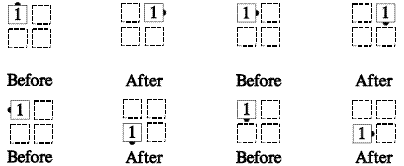
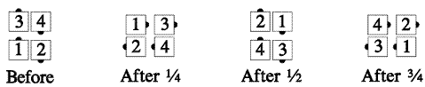

From any 4-dancer formation with no dancers facing the flagpole center [At Advanced, this call is used only from box circulate, and certain T-bone formations.]: This call may have a fraction after it, such as Box Counter Rotate 3/4. If no fraction is given, it means Box Counter Rotate 1/4.
For each 1/4 in the fraction: Each dancer moves his position in the formation forward around the center of the formation 90°, by walking forward in a smooth arc to reach that spot. Each dancer works independently of the other 3 dancers in his formation.
Every dancer can Roll at the end of this call.
The diagrams below show the beginning and ending positions for a single dancer, for every spot in a box circulate formation.
Example -- Box Counter Rotate 1/4:

Example—Box Counter Rotate 3/4:

For Teaching: Think of this as Promenading 1/4 in the formation; that captures the smoothness of the call. You can also have the leads Quarter In and Box Circulate, while the trailers Box Circulate and Quarter In. That gets the dancers to the right place.
Timing: 4